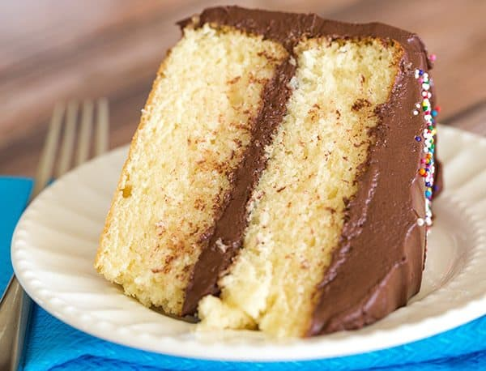

05/Jan
Classic Yellow Cake with Chocolate Frosting
This fluffy vanilla cake recipe is the absolute best yellow cake from scratch and paired with the silky smooth chocolate frosting, you can't beat it for a class.
Read more07/Jan
Coconut Bundt Cake with White Chocolate-Coconut Glaze

Last week flew by and before I knew it, it was time to plan the menu for Sunday dinner. Sundays have been a perfect opportunity for me to experiment with new dessert recipes, especially those that serve tons of people, since we have help polishing it all off and don't have it sitting around the house, tempting us for days.
Read more01/Feb
Cream Cheese Pound Cake

If you are looling for the perfect cream cheese piund cake recipe that turns out buttery, moist, and dense each and every time, add this year-round crowd-pleaser to your list! Using only 7 simple ingredients, this easy cream cheese pound cake will quickly become your favorite, serve plain with a sprinkle of poewdered sugar or offer homemade whipped cream and berries, or a dizzle of salted caramel or fudge sauce.
Read more12/Feb
German Chocolate Cake

I have long associated German Chocolate Cake with Father's Day, althought I'm not entirely sure why, I think I remember my mom making it for my dad once or twice growing up (althought never on Father's Day, ironically) and the correlation must have stuck somewhere along the way.
Read more